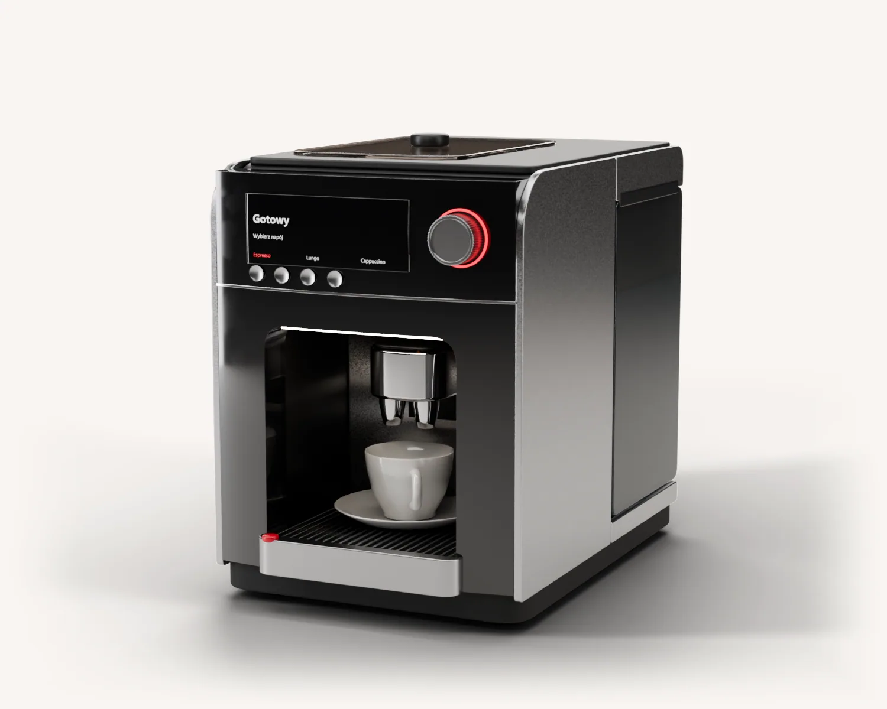
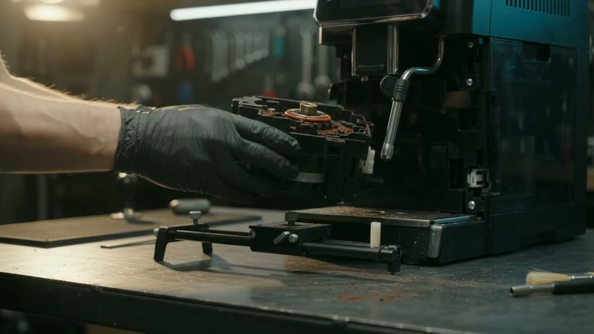
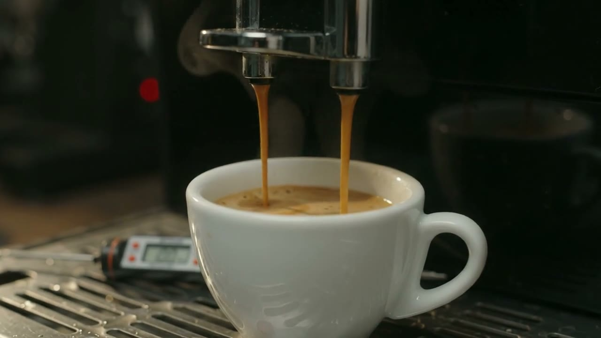

Serwis i naprawa ekspresów do kawy
Warsztat w Warszawie i odbiór kurierem z całej Polski.
Koszt naprawy znasz, zanim cokolwiek zaczniemy.
Sprawdzamy układ wodny, zaparzacz, młynek i elektronikę.
Dzwonimy albo piszemy SMS z zakresem i ceną. Naprawiamy po Twojej akceptacji.
Sprawdzamy szczelność, temperaturę i spienianie, a ekspres wraca do Ciebie.
Co się dzieje z Twoim ekspresem?
Serwis ekspresów z odbiorem z całej Polski
Polnej Róży 2/4 lok. U2
02-798 Warszawa
Kurier odbiera ekspres spod Twojego adresu.
Zamów odbiór
Zdejmujemy obudowę. Bez zgadywania.
Najpierw szukamy przyczyny. Potem dzwonimy z zakresem i ceną. Diagnoza jest bezpłatna.
Naprawa ekspresów automatycznych i kolbowych
- UszczelnieniaWymieniamy uszczelnienia na połączeniach. Od nich zależy ciśnienie.
- ZaparzaczCzyścimy pod bieżącą wodą i smarujemy smarem spożywczym.
- TemperaturaMierzymy bojler i kawę na wylocie, zmieniamy pastę termoprzewodzącą, sprawdzamy czujnik NTC.
- OdkamienianieProgram odkamieniania, a podzespoły dodatkowo zanurzamy w roztworze.
- DozowanieSprawdzamy ilość kawy w filiżance i przepływomierz.
- MłynekCzyścimy żarna i wylot kawy, regulujemy mielenie.
- WnętrzeUsuwamy osady, rozsypaną kawę i pleśń.

Test parzenia przed zwrotem.
Ekspres wraca dopiero po kontroli.
- szczelność
- temperatura
- młynek
- spienianie
Serwis ekspresów Jura, DeLonghi, Saeco i innych
Jura E8 Ena 4 W8 X4 Giga X8 Giga X10/ DeLonghi/ Saeco Primea Primea Ring Talea Touch/ Philips/ Siemens EQ.5 EQ.7 Surpresso S20 Surpresso S65/ Krups/ Melitta/ Nivona/ Bosch Benvenuto B40/ La Cimbali/ Miele/ Sage/ WMF/ Egro/ Schaerer/ Dr. Coffee/ Bartscher/ Coffee Format/ Breville
KolboweLa Cimbali/ Gaggia/ Faema Enova/ Sage/ Rancilio/ Sanremo/ La Pavoni/ Futurmat/ Astoria/ Casadio/ Expobar/ Elektra/ Magister/ Promac/ Spaziale/ Wega/ Victoria Arduino
Jestem bardzo zadowolony z naprawy i konserwacji ekspresu. Panowie z serwisu to magicy, ekspres śmiga jak nowy a kawa jest boska (ekspres mam od nowości ale dotąd nie robił tak dobrej kawy). Muszę również dodać, że sprzęt był wyczyszczony i błyszczący, co jest dodatkowym atutem bo widać, że wkładają dużo pracy i serca w to co robią a nie idą na ilość jak to zazwyczaj bywa. 5 gwiazdek to za mało Waszym przypadku.
Naprawiałem ekspres Saeco. Wszystko sprawnie i szybko. Właściciel wszystko wyjaśnił. Ekspres do wydania wyczyszczony i umyty. Cena adekwatne a do włożonej pracy. Polecam z czystym sumieniem.
Tanio…. ale profesjonalnie. Świetny kontakt. Rzeczowa diagnostyka i wycena. W innym serwisie chciano za wymianę wyświetlacza, ponad dwukrotnie większą kwotę. Zdecydowanie polecam
Polecam ! Ekspres wrócił do domu jak nowy ! Kawa smakuje obłędnie i spienia idealnie mleko.
Serwis godny polecenia – szybka diagnostyka i naprawa, brak problemów z kontaktem, a na każde moje pytanie uzyskałem wyczerpującą odpowiedź 🙂
Kto naprawia
Twórcą firmy jest Mateusz, a ekspresy naprawiamy w warsztacie w Warszawie. do uzupełnienia: lata działania, liczba napraw, zdjęcie osoby, ocena Google


Najczęstsze pytania
Jakie ekspresy naprawiacie?
Ekspresy automatyczne i kolbowe, między innymi Saeco, Siemens, Nivona, DeLonghi, Krups, Philips, Bosch, Jura, Melitta, Miele, Sage, WMF, Gaggia, La Cimbali i Faema.
Ile kosztuje diagnoza?
Diagnoza jest bezpłatna. Po niej dzwonimy albo wysyłamy SMS z zakresem naprawy i kosztem całkowitym. Naprawę zaczynamy dopiero po Twojej akceptacji.
Jak dostarczyć ekspres do serwisu?
Osobiście do warsztatu przy ul. Polnej Róży 2/4 lok. U2 w Warszawie albo kurierem z całej Polski. Koszt kuriera to 35 zł brutto w jedną stronę.
Co dołączyć do ekspresu?
Komplet: spieniacz, dyszę wody, pojemnik na skropliny, pojemnik na wodę, pojemnik na mleko i przewód zasilający. Te elementy też bywają przyczyną usterki.
Jak przygotować ekspres do wysyłki?
Opróżnij zbiornik na wodę, tacę ociekową i pojemnik na kawę. Najlepiej zapakuj ekspres w opakowanie fabryczne, a karton okręć folią stretch.
Ile trwa naprawa?
do uzupełnienia: typowy czas naprawy
Czy dajecie gwarancję?
do uzupełnienia: okres i zakres gwarancji
Ile kosztują typowe naprawy?
do uzupełnienia: widełki cen
Czy opłaca się naprawiać starszy ekspres?
do uzupełnienia: stanowisko serwisu
Zamów odbiór ekspresu
do uzupełnienia: czas oddzwonienia